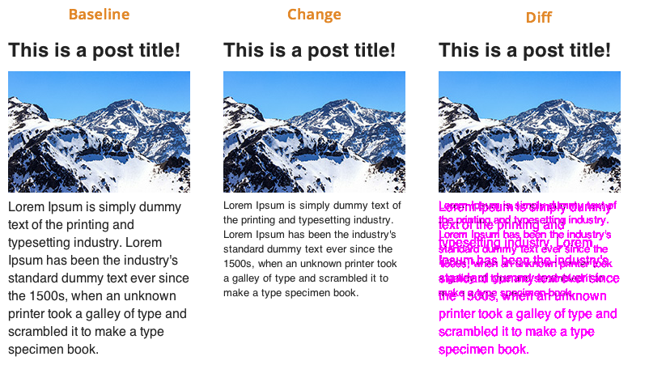

Automated CSS Regression Testing
Janet Lehmann
Was ist Automated CSS Regression Testing?
Leitfrage:
Wie sieht meine Webseite aus, nachdem ich Änderungen vorgenommen habe?
Idealfall
Veränderungen sind nur an der "gewollten" Stelle erfolgt.
Worst Case
Veränderungen überall, bloß nicht da wo sie sein sollen.
Was tun, um das zu verhindern?

Von Hand? :(
Deshalb: Automated CSS Regresstion Testing
Die Funktionsweise
Das Tool
https://github.com/Huddle/PhantomCSSDie Umgebung
Umsetzung